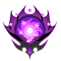

About Prime, Supernova, & Boosted Medals
Prime Medals
Prime Medals are special type of Medal that has specific bonuses when evolved to 7★. A 7★ Prime Medal has the following bonuses advantages compared to a regular Medal:- The Prime Medal will have 5 trait slots. (The 6★ version will have 3 trait slots.)
- Using Chip and Dale Medals, you will be able to power up the Medal to +2000 STR and DEF, beyond the usual +1000 STR and DEF.
- The Medal will gain an increased SP Attack Bonus buff as a part of its Special Attack.
Supernova
Equipping a Supernova Medal enables you to unleash its powerful Supernova once per quest, per Supernova medal. You can activate the Supernova at any time during your own turn. In PvP Mode, activation timing will vary depending on the Medal when defending- Supernova Kairi/Xion will activate on the 1st slot
- Supernova KHIII Sora will activate on slot 4.

Boosted Medals
When drawing from certain Deals, you may obtain the Boosted version of a Medal. Compared to their original Medals, Boosted Medals have increased stats, such as 1,000 more Strength. You can see the Boosted rates from a Deal in the "Draw Odds" tab. In the Medal Details screen, the boosted base Strength and Defense stat of a Boosted Medal will usually be highlighted in yellow instead of the usual white text. You will lose the Boosted stats if you fuse a Boosted version of a Medal onto its normal counterpart. As with regular Medals, the maximum Strength and Defense of Boosted Medals can be further increased with Chip and Dale Medals.Trait Medals
Some Medals have their own exclusive Trait Medal. Before you go any further, note this: Never use all the trait medals at once, do them one by one. IMAGE IMAGE Trait Medals are black-and-white Medals that can be can be fused onto their original Medals to unlock the following:- The original Medal will gain a new trait.
- The original Medal will gain one Special Attack dot, if its a 6★.
About Guilt, Traits, & Boosters
Guilt
Guilt, or Special Attack Bonus, is a damage bonus added on top of the damage multiplier. Different medals have different bonuses based on their Tier.| Tier 1 | Increases damage by 25% |
| Tier 2 | Increases damage by 50% |
| Tier 3 | Increases damage by 100% |
| Tier 4 | Increases damage by 130% |
| Tier 5 | Increases damage by 150% |
| Tier 6 | Increases damage by 180% |
| Tier 7 | Increases damage by 200% |
| Tier 8 | Increases damage by 230% |
| Tier 9 | Increases damage by 280% |
Traits
When you fuse a Medal onto another Medal that is the exact same, regardless of rarity, you will gain a Trait. A Trait can provide multiple buffs to your medals. To see your traits, tap on a medal, then tap on the blue down-arrow at the bottom.
To see your traits, tap on a medal, then tap on the blue down-arrow at the bottom.
 If you've filled all your trait slots, you get an option to replace a trait when you trait again.
If you've filled all your trait slots, you get an option to replace a trait when you trait again.
 Available Traits:
Available Traits:
Affects your Keyblade
| Trait | Description |
|---|---|
| Max Gauges +2 | Raises your Gauges by 2 |
| Max HP +800 | Raises the player's HP cap by 800 |
| Poison Resist 20% | Lowers the odds of getting poisoned by 20% |
| Paralysis Resist 20% | Lowers the odds of getting paralyzed by 20% |
| Sleep Resist 20% | Lowers the odds of being put to sleep by 20% |
Affects only the medal
| Trait | Description |
|---|---|
| Ground Enemy DEF -60% | Lowers defense of ground enemies by 60% |
| Aerial Enemy DEF -60% | Lowers defense of aerial enemies by 60% |
| Damage in Raids +40% | Raises damage dealt against Raid Bosses by 40% |
| Extra Attack: 40% Power | Deals another attack with 40% of the medals power |
| STR +1000 | Raises medal strength by 1,000 |
| DEF +2000 | Raises medal defense by 2,000 |
Booster
In Version 2.4.0, we received Boosters. These items boost either Keyblade Multiplier by x1.000, or boost certain types of medals, like Organization 13 medals, or Power medals. You can check what Boosters you have by tapping on your character in the top-left, and tapping "Booster" right below your Nova. Boosters are usually obtained from Union Cross by completing the boards that have them.About the Pet
In Version 2.3.1, we received an update that included a Pet System, a little fluffy companion that you can take on your adventures. If you're a newcomer, you can receive your own Pet when you complete Story Quest 14. With a Pet at yor disposal, you can equip an aditional medal in the "Pet/Spirit Slot", and have Tricks that'll help you out, like Steal, which will increase the dropped amount of items when defeating an enemy. You can also name your pet, dress it up, and even combine different species to create abominations. To change your pets name, tap on the "Name" button.Equiping Another Medal
When editing your keyblade, press the "Spirit" button at the top to add a 6th medal to your keyblade
Tricks & Costumes
To access the Pet Menu, tap on your pets icon to the left of your avatar. To dress up your pet, tap on the "Outfits" button.
In here, you can customize your pet to whatever you want.
To dress up your pet, tap on the "Outfits" button.
In here, you can customize your pet to whatever you want.
 To level up your pet, tap on the "Gear" button, and press "Optimize". Keep doing this everytime you get a new medal.
Your Pet's rank is determined by the total points of the 6 Medals equipped on this screen.
When your Pet's rank increases, their damage multiplier (for your 6th slot Medal) will increase and they will also learn a new Trick!
Medals that have traits give better points than ones without.
To level up your pet, tap on the "Gear" button, and press "Optimize". Keep doing this everytime you get a new medal.
Your Pet's rank is determined by the total points of the 6 Medals equipped on this screen.
When your Pet's rank increases, their damage multiplier (for your 6th slot Medal) will increase and they will also learn a new Trick!
Medals that have traits give better points than ones without.
 Your Pet's Tricks will activate in battle after fulfilling certain conditions. These abilities are super helpful, as your Pet will come to your aid and help you in different ways!
You can confirm your Pet's Tricks on the Main Pet Screen by tapping the Tricks button.
The Medals you use to increase your Pet's rank will not be deleted or used up, so feel free to change them up as you wish.
List of Tricks:
Your Pet's Tricks will activate in battle after fulfilling certain conditions. These abilities are super helpful, as your Pet will come to your aid and help you in different ways!
You can confirm your Pet's Tricks on the Main Pet Screen by tapping the Tricks button.
The Medals you use to increase your Pet's rank will not be deleted or used up, so feel free to change them up as you wish.
List of Tricks:
- [Rank 2] Steal I (Obtains dropped items x2. Has a 50% trigger rate when an enemy drops an item. 1 charge per battle)
- [Rank 3] Blast I (Deals 10,000 damage if an enemy is below 10,000 HP. 1 charge per battle)
- [Rank 4] Esuna I (Cures your status ailments when affected. The statuses are Sleep, Paralysis & Poison)
- [Rank 5] HP Recovery I (Basically Second Chance, which means you'll resurrect if you die. Can be combined with Second Chance, for a total of 2 revives)
- [Rank 6] Steal II (Obtains dropped items x3. Has a 50% trigger rate when an enemy drops an item. 1 charge per battle)
- [Rank 7] Poison Boost I (Deals more poisoned damage to poisoned targets)
- [Rank 7] Paralysis Boost I (??? / Likely useless
- [Rank 7] Sleep Boost I (Keeps targets that are asleep for 3 hits. 2 charges per battle)
- [Rank 8] Blast II (Deals 30,000 damage if an enemy is below 30,000 HP. 1 charge per battle)
- [Rank 9] P Attack Boost I (Raises your Power STR by 1 tier for 1 turn when P-Str is raised. Ignores the max limit. 1 charge per turn)
- [Rank 9] S Attack Boost I (Raises your Speed STR by 1 tier for 1 turn when S-Str is raised. Ignores the max limit. 1 charge per turn)
- [Rank 9] M Attack Boost I (Raises your Magic STR by 1 tier for 1 turn when M-Str is raised. Ignores the max limit. 1 charge per turn)
- [Rank 10] Steal III (Obtains dropped items x4. Has a 50% trigger rate when an enemy drops an item. 1 charge per battle)
- [Rank 11] Combo I (Deals 40% more damage. Has a 25% trigger rate. 6 charges per battle)
- [Rank 12] Blast III (Deals 100,000 damage if an enemy is below 100,000 HP. 1 charge per battle)
- [Rank 13] P Attack Boost II (Raises your Power STR by 2 tier for 1 turn when P-Str is raised. Ignores the max limit. 1 charge per turn)
- [Rank 13] S Attack Boost II (Raises your Speed STR by 2 tier for 1 turn when S-Str is raised. Ignores the max limit. 1 charge per turn)
- [Rank 13] M Attack Boost II (Raises your Magic STR by 2 tier for 1 turn when M-Str is raised. Ignores the max limit. 1 charge per turn)
Story/Proud Lookup
This is a Story/Proud quest lookup, that'll tell you everything you need to know about the quest. This'll be available soontm. I might need help getting 1600+ quest objectives, enemies information, all that good stuff. Hit me up on Discord if you want to helpJewels & Ores from Story/Proud
Story Mode
Jewels
Data Download (Quest 6)
2,000 JewelsQuest 7
1,000 Jewels Total: 3,000Quest 10-50
300 every 5 quests 2,700 altogether Total: 5,700Quest 55-525
150 every 5 quests 14,250 altogether Total: 19,950Quest 530-875
250 every 5 quests 1,000 on 865, 870, 875, & 880 12,250 altogether (excluding irregulars) Total: 33,700 NOTE: 755 doesn't give any jewelsIrregular Quests after 660
- Quest 664, 667, 672, 674 - Quest 709, 712, 719, 722, 732, 734, 754, 757, 777, 784, 787, 794, 797 - Quest 802, 807, 812, 814, 824, 834, 837, 839, 842, 844, 847, 849, 852, 854, 857, 859 250 per quest 8,750 altogetherProud Mode
Proud+ Jewels
30 per quest 480 per event 1,440 altogetherJewels
Quest 5-825
150 every 5 quests (Starting from 805, each quest will give you 300 each) 26,400 altogetherOres
Electrum Ore (Quest 1-300)
- You need Electrum Ore to level up Sleeping Lion, Counterpoint, and Fenrir
- You only need 100 Electrum Ore to level up each keyblade above to 25+
Dark Matter
- You need Dark Matter to level up Darkgnaw, Missing Ache, Diamond Dust
- You only need 100 Dark Matter to level up each of the mentioned keyblades above to 25+
- You get 2 Dark Matter from every quest as 2 objectives (e.g, Dark Matter, Avatar Coins, Dark Matter) Quest 326-450: 250 Dark Matter Quest 476-500: 50 Dark Matter